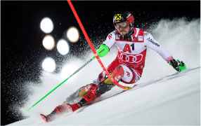

Voordeel geslepen ski's

Sta zelfverzekerd op jouw ski's en snowboard
Er is niks ververlends dan uitglijden op het ijs tijdens het skien/snowboarden met ongeslepen kanten die hartstikke bot zijn. Zoals je hierboven ziet, zie je Marcel Hirscher bijna verticaal op zijn ski's staan. Dat is alleen mogelijk door zijn scherpe kanten.